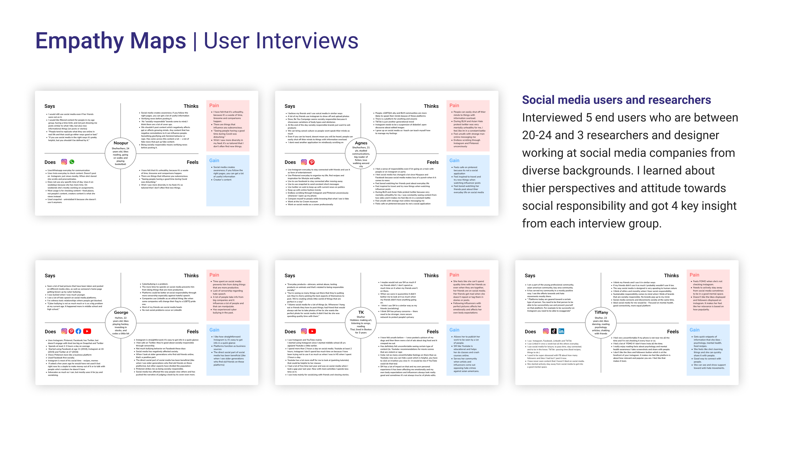
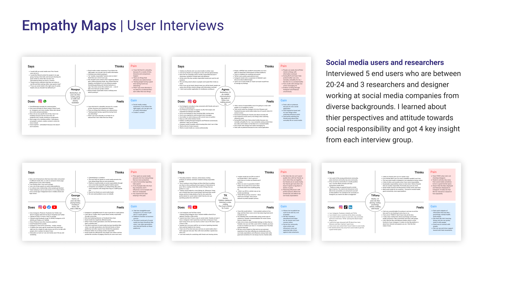
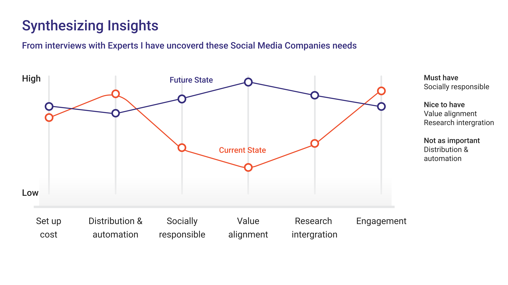
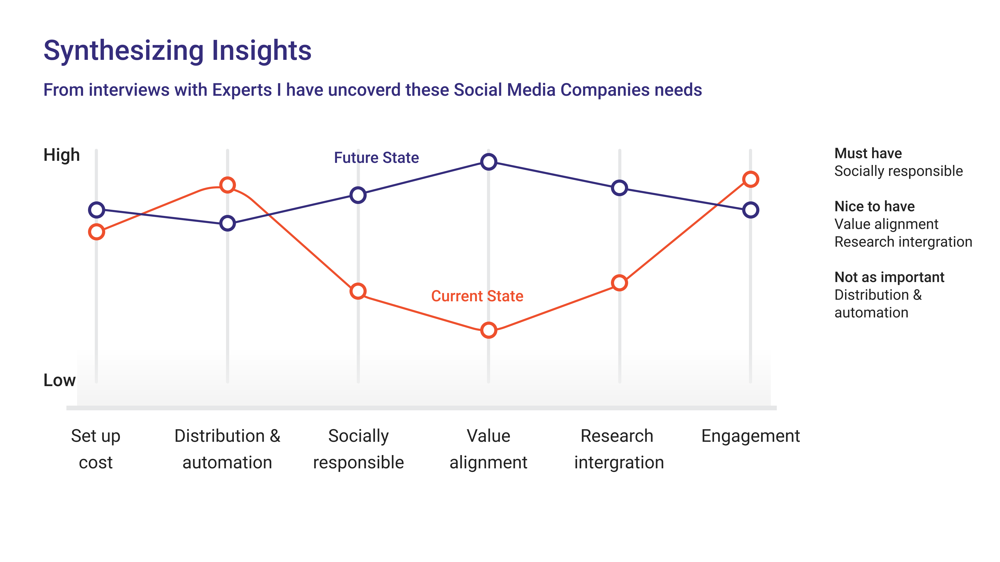
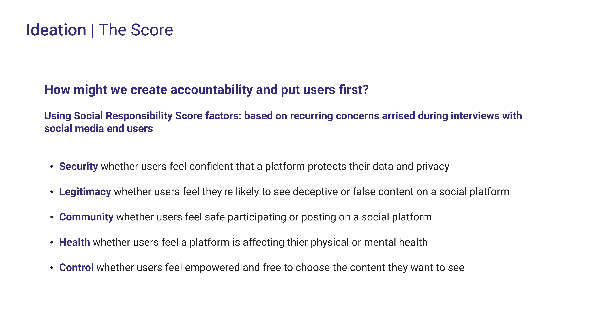
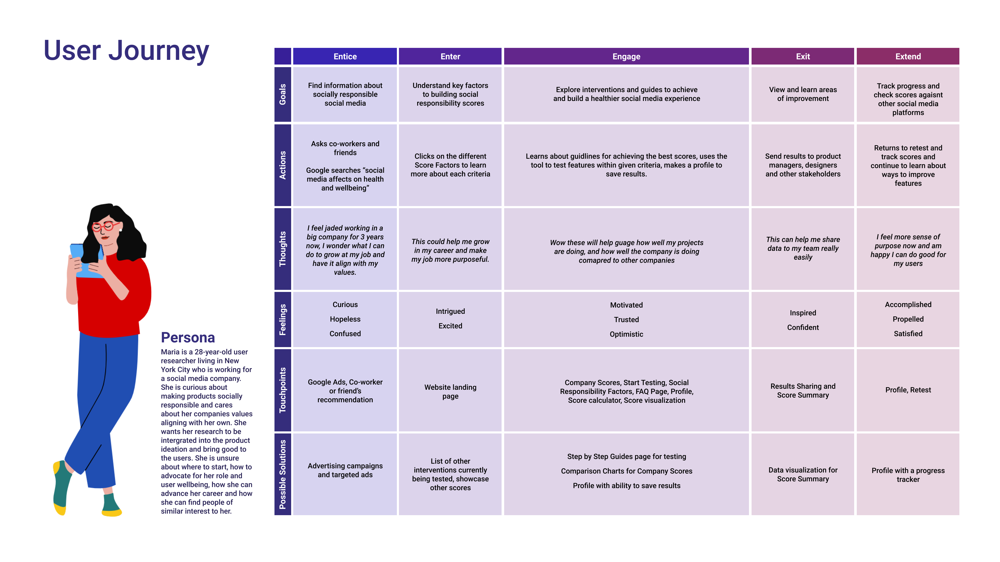
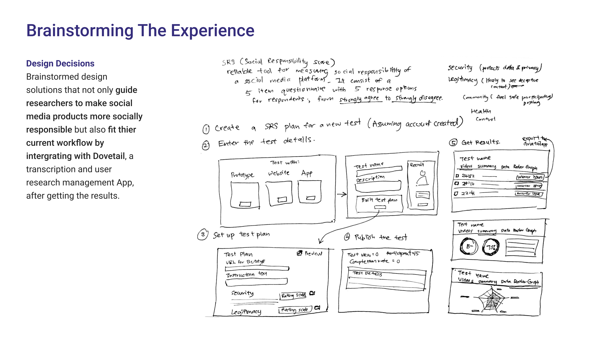
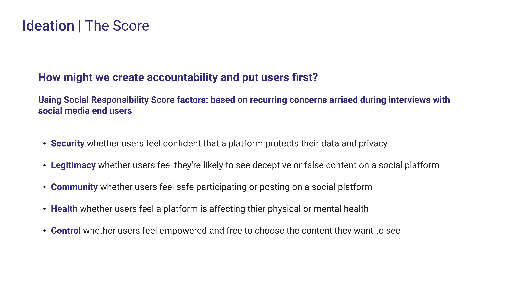
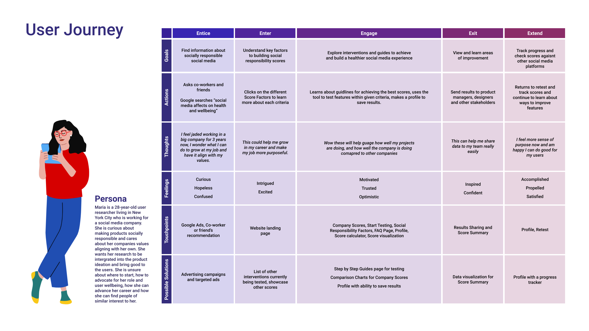
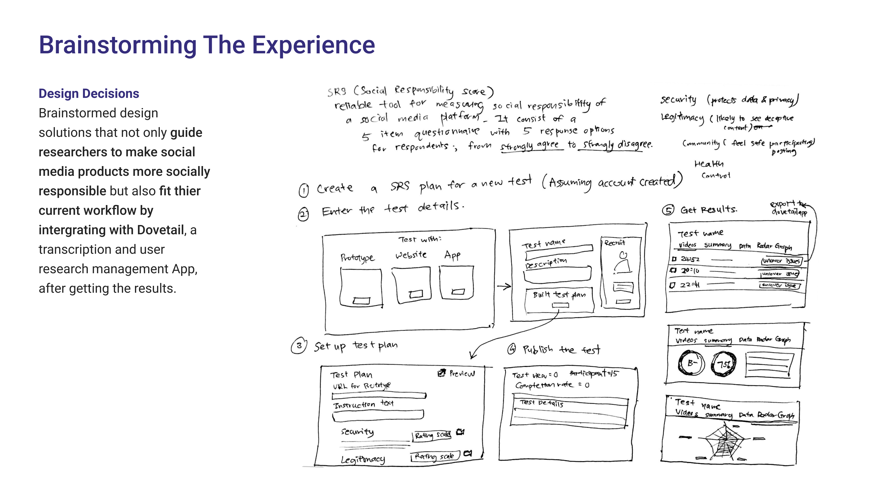

Testwell
Designing a Social Responsibility Score tool for Researchers & Designers working at Social Media Companies.
My Role
Research, UX / UI Design
Client
Deloitte, New York
Advisors
Darshana Nair, Julius Tapper, Kinza Kasher, Criswell Lappin, Roger Mader
Creating accountability among Social Media companies
Facebook's research team reported Instagram made body image issues worse for 1 in 3 teenage girls; among users who reported suicidal thoughts, 13% in the US tracked them back to Instagram. Research departments at different social media companies identify issues that arise as products evolve but it has not been enough. Product changes also come with material financial and competing considerations, how should product choices be made and prioritised? Testwell is a school project collaboration with Deloitte to tackle the following challenge.
Problem Statement
What are the considerations for the role of user research in informing social media products and policy? And what are the implications for social media products in teenagers and young adults?
Solution
Testwell is a web platform empowering researchers and designers to advocate for young social media user's health and wellbeing, while creating accountability among social media platforms by using a social responsibility score system.


 



 

 





Final Delivery


Next Steps
Measuring success
To measure success after this product is being launched, there are a few key numbers we can take a look at:
1. Conversion Rate: moving from the dashboard to the build new test page.
2. Number of tests per month.
3. Qualitative accounts of how awareness and test for social responsibility have improved using our product.